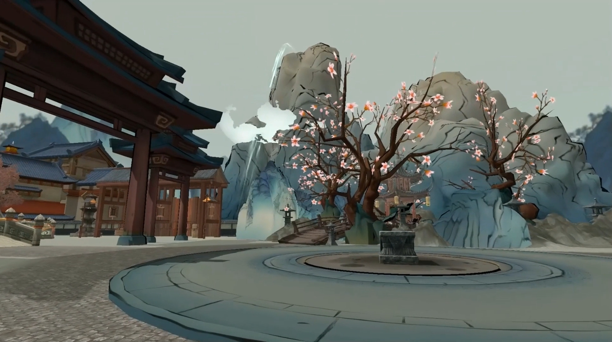
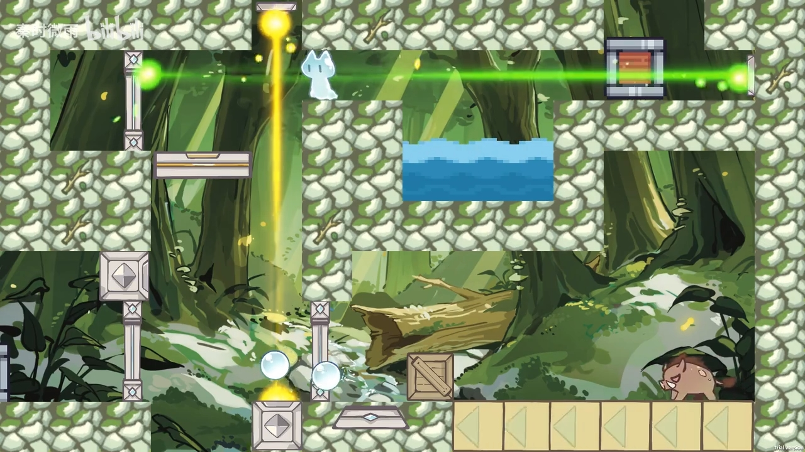
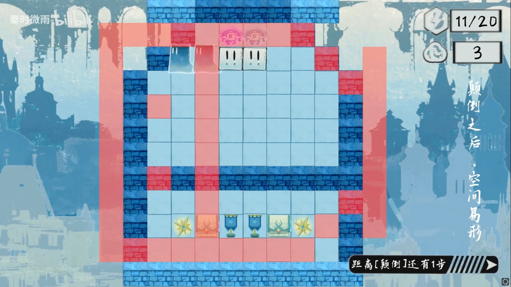
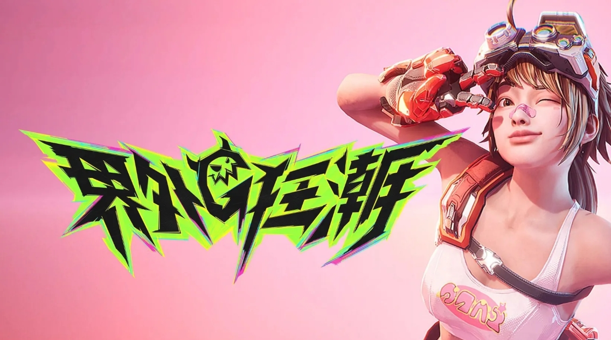

时间线
2024.02 《算学道旅》中国大学生计算机设计大赛游戏赛道作品(省二)
这是一个Unity3D+解谜类型的游戏，玩家将扮演一名算学爱好者，在一个充满数学谜题和挑战的虚拟世界中展开冒险。在这个项目中我负责完成游戏总体设计，落实并完成主场景中的中国风地编，实现角色3C与关卡内基本玩法，基于古代算学成就勾股定理、割圆术等四个符合背景的独立关卡。
2024.10 《水滴环游记》2024秋季腾讯极限开发大赛(最佳创意)
这是一个Unity2D横版平台跳跃游戏，玩家将扮演一个水精灵，在各种充满挑战的关卡中冒险，体验水滴的奇妙旅程。在这个项目中我负责完成游戏总体设计，描述美术主题、落实并完成主场景中的关卡设计与搭建，基于水的三态变化设计多个符合背景的独立关卡。
2024.11 《入梦者》2024冬季吉比特高校gamejam挑战赛(优秀奖)
这是一个Unity2D类推箱解谜冒险游戏，你将扮演入梦者进入梦境，运用你的智慧增殖生成玩家实体进行解密。在这个项目中我负责完成游戏总体设计，描述美术需求完成项目场景布设，配置关卡表与剧情，通过浅睡期与深睡期的转移进行玩家实体的生成，进而同时操控多个玩家对象进行关卡内的解密。
2025.03 《界外狂潮》网易雷火项目组
这是一款UE第一人称英雄射击游戏，我在项目中负责职责为系统策划，负责的职责有角色皮肤资源与武器资源配置、角色技能设计、资源验收与展示等。下面是我参与设计的僵尸模式一名僵尸阵营角色血姬的视频演示pv